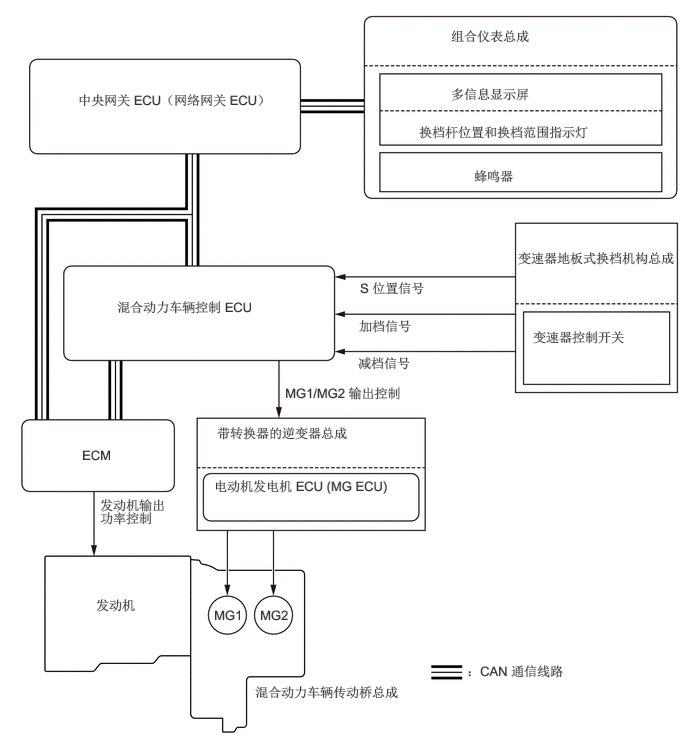

功能
顺序换档系统使驾驶员通过操作换档杆可从 6 级发动机制动力中选择合适的档位。通过控制发动机、发电机 (MG1) 和电动机 (MG2)，该系统改善了发动机制动力的产生响应。此外，对发动机转速进行控制以保持高转速，从而提高了驾驶员踩下加速踏板时的加速响应。
通过将换档杆移至 S，自动换档模式将切换至换档范围选择模式。通过操作换档杆，驾驶员可以所选换档范围驾驶，且可选择加速踏板特性和加速响应。
在换档范围选择模式下，选择低换档范围时，减速期间发动机制动力变大；加速期间加速踏板中间和全开范围之间的原动力变大。
| 换档范围 | 特性 |
|---|---|
| 低换档范围 | 增大了加速踏板踩至中间位置至完全踩下位置时驱动力输出的变化，从而改善了车辆对驾驶员踏板操作的响应。 |
| 高换档范围 | 随加速踏板踩踏量变化的驱动力输出变化减少量比正常时大，因而增强了加速踏板控制，使得定速巡航期间易于保持车速。 |
顺序换档系统并不表示最高车速和最大运动性能得到改善。同时，换档杆移至 S 时，禁用行驶模式（SPORT 和 ECO）下的加速踏板特性。
将换档杆从 D 移至 S 时，S 模式位置信号从变速器控制开关输出至混合动力车辆控制 ECU，然后系统切换至换档范围选择模式，该模式可用换档杆进行换档范围切换操作。
在换档范围选择模式下，通过用换档杆执行“+”（加档）或“-”（减档）操作，加档信号或减档信号从变速器控制开关输出至混合动力车辆控制 ECU，且改变换档范围。使用所选换档范围为上限时，根据驾驶条件自动选择最佳换档点。

置于 S 时将换档杆保持在“+”（加档），不论当前换档范围（S1 至 S5），换档范围都将变为 S6 范围。
为保护传动桥，在换档范围选择模式下选择 S1 和 S4 范围之间的任一范围加速时，通过超过各换档范围的预定车速，顺序加档自动加至 S5 范围。
顺序换档系统相关局限性
接收到驾驶员通过操作换档杆发出的减档请求后，如果车速超过限速，则此系统限制换档，并通过鸣响组合仪表总成中的蜂鸣器通知驾驶员。
| 减档请求 | 限速（参考值） |
|---|---|
| 6 → 5 | - |
| 5 → 4 | 150 km/h (50 mph) |
| 4 → 3 | 122 km/h (76 mph) |
| 3 → 2 | 82 km/h (51 mph) |
| 2 → 1 | 51 km/h (32 mph) |